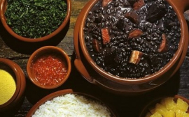
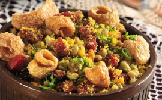
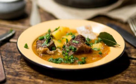
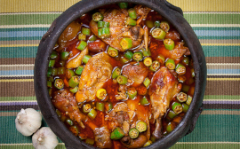
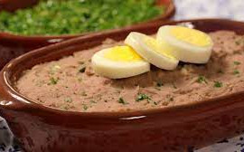
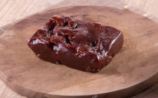

Temos no nosso cardápio:
Pratos Quentes |
|||
|---|---|---|---|
|
 |
Feijoada Mineira | Servida com arroz branco, farinha de mandioca e molho temperado (feito com o próprio caldo do feijão). | R$ 25,00 |
|
 |
Feijão Tropeiro | A iguaria leva farinha, ovo, carnes variadas e feijão. Conta-se que a receita surgiu dos tropeiros, nome dado aos homens responsáveis por transportar os alimentos durante o período colonial. | R$ 40,00 |
|
 |
Vaca Atolada | Mandioca com carne de boi, a vaca atolada está muito presente quando a temperatura dos termômetros começam a cair. A origem do nome é justamente porque a carne fica embrenhada em meio à mandioca. | R$ 30,00 |
|
 |
Frango com Quiabo | O frango com quiabo é um clássico, muito comum nas mesas dos mineiros e também nos restaurantes típicos. Não tem como vir a Minas e não provar esse prato. | R$ 35,00 |
|
 |
Tutu Mineiro | É um feijão batido com farinha, um prato também muito comum de se encontrar nos restaurantes. Rodelas de ovos e cebolinhas são os típicos itens de decoração na receita. | R$ 25,00 |
| Torresmo | É possível pedir o torresmo mais crocante, feito só da pele, ou uma opção com mais carne. Na versão individual, mais macia, uma fatia larga de carne tem a pururuca na ponta. | R$ 15,00 | |
Doces |
|||
| Doce de Leite | O doce de leite é um doce muito amado pelos brasileiros e também pelos argentinos. O Dulce de Leche argentino é conhecido pela sua qualidade e sabor. No Brasil, os mineiros são famosos por fazerem doces de leite deliciosos. | R$ 8,00 | |
| Pão de Queijo | Recheado com requeijão da casa, Requeijão com azeitona, Cheddar, Doce Leite ou Polenguinho. | R$ 10,00 | |
|
 |
Goiabada | Goiabada cascão, grelhada com catupiry, sorvete de creme, chantilly, castanha de caju, cereja e granadina. | R$ 7,00 |